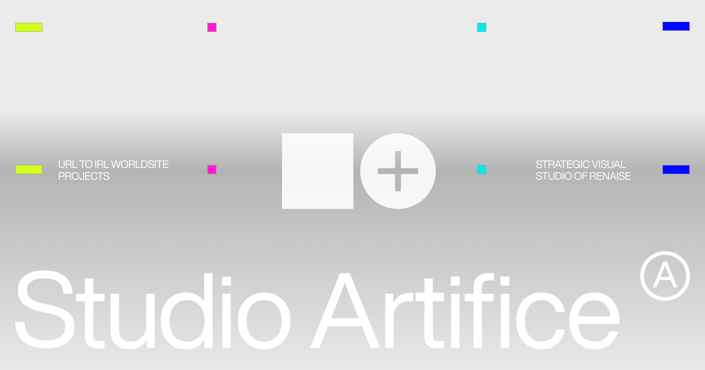
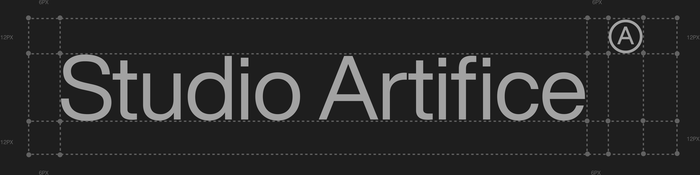

Studio Artifice is a strategic visual studio in New York, designing durable artifacts for AI companies, cultural institutions, and consumer brands.
The practice develops worldsites that connect brand identity, websites, and live experiences across strategy, identity, applications, and production. Engagements can begin at different phases depending on the work already established, with production contingent on an approved creative direction and scope.
About
Studio Artifice is led by Renaise, a visual prototyper and producer with eight years on worldsites, the identity work that runs from strategy through production. She works from New York, across culture and venture, with clients in consumer media, creative tools, and deep tech. She also leads creative direction at Artifice, a cultural nonprofit.
- Name
- Studio Artifice
- Legal name
- Studio Artifice LLC
- Location
- New York
- Led by
- Renaise
- Clients
- AI companies, cultural institutions, and consumer brands
- Phases
- StrategyIdentityApplicationsProduction
- Founded
- TBD · Artifice to supply
- Web
- TBD · Artifice to supply
- Contact
- TBD · Artifice to supply
Boilerplate
Studio Artifice is a strategic visual studio in New York, designing durable artifacts for AI companies, cultural institutions, and consumer brands.
Studio Artifice is a strategic visual studio in New York, designing durable artifacts for AI companies, cultural institutions, and consumer brands. The practice develops worldsites that connect brand identity, websites, and live experiences across strategy, identity, applications, and production. Engagements can begin at different phases depending on the work already established, with production contingent on an approved creative direction and scope.
Studio Artifice is a strategic visual studio in New York, designing durable artifacts for AI companies, cultural institutions, and consumer brands. The practice develops worldsites that connect brand identity, websites, and live experiences across strategy, identity, applications, and production. Engagements can begin at different phases depending on the work already established, with production contingent on an approved creative direction and scope.
Studio Artifice is led by Renaise, a visual prototyper and producer with eight years on worldsites, the identity work that runs from strategy through production. She works from New York, across culture and venture, with clients in consumer media, creative tools, and deep tech. She also leads creative direction at Artifice, a cultural nonprofit.
Thesis
A brand is one continuous artifact. Identity, website, and live experience are not separate deliverables; they are one worldsite, built to hold together from URL to IRL. The studio designs that artifact to be durable: systems that survive handoff, scale, and time, rather than campaigns that expire. Work moves through four phases, strategy, identity, applications, production, and an engagement can enter at any phase the work has earned.
Phases
Point of view
Evidence over claims: process shown, materials named, decisions logged. The visual register follows from that. It borrows the language of inspection and print production, registration marks, test strips, measured grids, imaging, because those are the tools of work being verified, not advertised.
Primitive logic
The graphic language is built from primitives: the square, the circle, the plus, and the 1px rule. Each one encodes something real.
Primitives
Compositions
Everything else is a composition of those. The device is square beside a circle with the plus knocked out. The monogram is the circle holding the letter A. The register marks on covers are bars and dots, square and circle at small scale. The index frieze is the device repeated. A new graphic element must either be one of these primitives or name which ones it composes; anything that cannot be decorated and gets cut.
The mark
The lockup is three parts: the device, the wordmark, and the Ⓐ monogram.
Marks
Clear space

Clear space is 2x on all sides of the wordmark and 1x to the monogram, fixed in the construction grid.
Minimum sizes
Incorrect use
High contrast only, approved files only, no recoloring or effects.
Downloads


Color
The system operates in a strict monochrome register.
Surfaces
Surfaces are monochrome. Hierarchy on a surface comes strictly from value and scale, light against dark, not from hue.
Grayscale
Typography
One sans sets everything: Helvetica Now Display.
Typefaces
Scale
Do
- Display sets light, around 300, at tight tracking.
- Labels are the metadata register: 11px, uppercase, tracked, muted, and rare.
- Rules and borders are 1px. Radius is 2px.
Don't
- ✕Nothing exceeds 500.
- ✕No monospace anywhere. Helvetica Now Display is the only typeface.
Motion
One easing curve, cubic-bezier(.22,1,.36,1), around 0.2s.
- Easing
- cubic-bezier(.22,1,.36,1)
- Duration
- around 0.2s
Imagery
The brand figure is an artist's mannequin: the still-life subject, the proxy a draftsman observes when learning to see. It stands for observation itself.
Figure and photography
Imaging it, thermal when the figure is the hero, X-ray grayscale on applications, is observational drawing carried into the studio's own instruments: the same subject, looked at harder. On applications the figure stays strictly grayscale. Photography elsewhere is dark, filmic, and shot in available light; no stock, no heavy grades.
Voice
Write like an editor, not a copywriter: assume a peer, state rather than sell.
Do
- Flat declarative sentences a reader could check or dispute.
- Observation over declaration, material before concept.
- Warmth comes from noticing, not adjectives.
Don't
- ✕No exclamation points.
- ✕No aphoristic punchlines.
- ✕No reversals built for quoting.